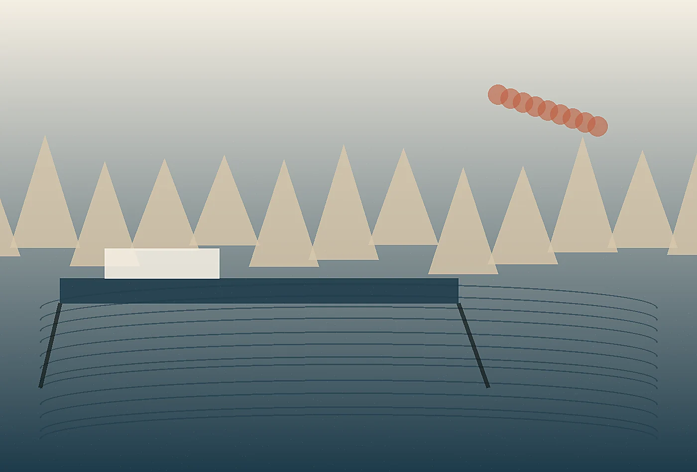

Kanso Current Advisory: quiet strategy for working waterfronts
Most waterfront projects begin with drawings, budgets, and competing opinions. Kanso Current begins by listening to the edge: gull noise over a ticket line, the pause before a visitor steps onto a floating dock, the small confusion caused by one misplaced sign. Those quiet observations become strategy because working harbors are never only scenery. They are delivery routes, memory keepers, storm thresholds, civic rooms, and daily workplaces. Our role is to make them legible without polishing away their salt and weather.
We help marina owners, port authorities, ferry operators, and cultural districts shape places that feel composed under pressure. A calm harbor is not a silent harbor; it is a place where people know what is expected, where maintenance has dignity, where a family can find the ramp, and where crews are not interrupted by preventable questions. We draw maps, test language, tune rituals, and prototype small physical cues before anyone commits to expensive construction. The result is a waterfront experience that earns trust because it understands tides, tools, neighbors, and time.
Our work is deliberately modest in appearance and rigorous underneath. We compare visitor journeys against storm procedures, accessibility needs, revenue moments, seasonal staffing, and local memory. We remove ornamental complexity, keep the useful marks, and leave behind systems that teams can operate when consultants are gone. If your quay, marina, ferry landing, or harbor district feels harder to use than it should, we can help reveal the current beneath the surface and design with it.
The studio also documents what should remain untouched. Some railings, notices, rituals, and scuffed surfaces carry trust because locals recognize them. By naming those keepers early, we protect character while still making the harbor easier to navigate, safer to operate, and more generous for first-time guests.
A final review translates the work into plain operating language: what to watch, who owns each adjustment, and how to judge whether the change is reducing friction. That clarity is especially important in waterfront settings, where seasonal staff, public partners, vendors, and visitors all interact with the same physical cues in different ways.
01
Listening Tide
We start with an unhurried harbor walk, observing moments that standard surveys miss: where crews improvise, where visitors hesitate, where signs compete with weather, and where local character is strongest. The resulting field record becomes a practical design compass rather than a decorative mood board.
Harbor Truths
Every waterfront is a negotiation between labor and leisure.
Maintenance language can be hospitality language when it is written with care.
Storm plans should be visible before the storm is visible.
Calm Systems
Our systems look simple because complexity has been resolved behind the scenes. We align wayfinding, staffing, seasonal programming, accessibility, and revenue touchpoints so the harbor feels intuitive on a crowded Saturday and during a gray November maintenance window.
Recent observations from the quay become concise recommendations that teams can act on.
Ticket line shadow and bench placement were solved together.
Kayak launch language was rewritten for first-time visitors.
Vendor deliveries were rerouted without losing public warmth.
Storm closure updates moved from apology to instruction.
Material Language
weathered cedarporcelain enamelrope textureinked brasstidal blue
We choose materials and words that can age honestly beside water. The finish must be legible, repairable, and specific to place.
Community Map
Harbor neighbors often know the problem before consultants name it. We host compact workshops with operators, artists, fishers, accessibility advocates, and nearby businesses, then convert the conversation into decisions rather than a wall of sticky notes.

“They made our working pier feel considered without turning it into a stage set.”
Weather Windows
Fog
Navigation cues move closer to the body.
Heat
Waiting zones borrow shade from existing structures.
Storm
Closure language becomes direct and calm.
method
Decision Ritual
Our weekly decision ritual pairs a one-page evidence brief with a single reversible prototype. Leaders see the tradeoff, crews test the reality, and momentum continues without dramatic redesign meetings.
ObserveTranslatePrototypeSteward
Before After Drift
Before
Visitors asked staff the same five questions while crews loaded supplies around them.
After
A quiet sequence of pavement marks, rail signs, and ticket language reduced interruptions and improved boarding confidence.
Steward Voices
“The plan respected our working hours.”
“It made the harbor easier without making it bland.”
“Our volunteers finally had language they could use.”
Useful Questions
Can small changes matter before capital work?
Yes. Language, queue geometry, seasonal furniture, and staff scripts often create immediate relief while larger improvements are planned.
Do you work with public agencies?
We do, especially when teams need resident trust, operational clarity, and a visible path from listening to action.
Will the harbor still feel like itself?
That is the point. We remove friction while keeping weather, craft, labor, and local memory present.
Next Mooring
Bring us a dock, landing, marina, or waterfront district that feels almost right. We will find the current and chart the next useful move.